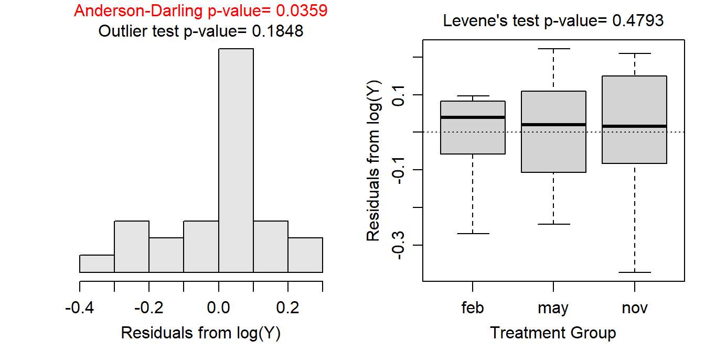

Module 8 One-Way Transformations
A One-Way ANOVA depends on four assumptions being met (see Module 7). If those assumptions are not met, then the results of the one-way ANOVA are invalid. Fortunately, violations of the equality of variances and normality assumptions can often be addressed by transforming the quantitative response variable to a scale where the assumptions are met. For example it is common to use the natural log of the response variable rather than the original response variable.
Besides the obvious reason related to assumption violations, Fox (1997) gave four arguments for why data that is skewed or has unequal variances should be transformed:
- Highly skewed distributions are difficult to examine because most of the observations are confined to a small part of the range of the data.
- Apparently outlying individuals in the direction of the skew are brought in towards the main body of the data when the distribution is made more symmetric. In contrast, unusual values in the direction opposite to the skew can be hidden prior to transforming the data.
- Linear models summarize distributions based on means. The mean of a skewed distribution is not, however, a good summary of its center.
- When a variable has very different degrees of variation in different groups, it becomes difficult to examine the data and to compare differences in levels across the groups.
Identification of an appropriate transformation and understanding the resultant output is the focus of this module.
If the assumptions of a one-way ANOVA are not met, then the data may be transformed to a scale where the assumptions are met.
8.1 Power Transformations
The response variable may be transformed by raising it to a particular power, \(\lambda\), i.e., \(Y^{\lambda}\) (Table 8.1).
| Power | Name | Formula | R Code |
|---|---|---|---|
| λ=0.5 | Square Root | \(Y^{0.5}=\sqrt{Y}\) |
df$newvar <- sqrt(df$oldvar) |
| λ=0.33 | Cube Root | \(Y^{0.33}=\sqrt[3]{Y}\) |
df$newvar <- df$oldvar^(1/3) |
| λ=0.25 | Fourth Root | \(Y^{0.25}=\sqrt[4]{Y}\) |
df$newvar <- df$oldvar^(1/4) |
| λ=0 | Natural Log | \(log(Y)\) |
df$newvar <- log(df$oldvar) |
| λ=-1 | Inverse | \(Y^{-1}=\frac{1}{Y}\) |
df$newvar <- 1/df$oldvar |
Each transformation in Table 8.1 “spreads out” small values and “draws in” large values in a distribution. For example, in Figure 8.1 the log function is shown as the black curved line, the original histogram of strongly right-skewed data is shown upside-down below the x-axis, and the histogram following the log-transformation is shown sideways left of the y-axis. Two “small” values are shown in red on the x-axis. The log-transformation of these two points is shown by following the two vertical lines from these points to the black log function and then moving horizontally to the y-axis. From this it is seen that these two values that were relatively close together are more spread out after the transformation. Conversely two “large” values are shown in blue on the x-axis. Following the same process it is seen that these two points are closer together following the log transformation.

Figure 8.1: Demonstration of the result (upper-left) from applying the natural log transformation function (black curve in upper-right) to strongly right-skewed original values (lower-right).
As seen in Figure 8.1, applying the log transformation to all values in the original strongly right-skewed distribution resulted in a distribution that was approximately normal. All transformations may not achieve normality. For example, the same process shown in Figure 8.1 is repeated in Figure 8.2 for a square-root transformation. A comparison of the two figures shows that the square-root transformation function is less curved, it spreads out relatively small values less and draws in relative larger values less, and it does not transform the original strongly right-skewed distribution to an approximately normal distribution. Thus, the square-root transformation is not a “strong enough” transformation to normalize this strongly right-skewed original distribution.

Figure 8.2: Demonstration of the result (upper-left) from applying the square root transformation function (black curve in upper-right) to strongly right-skewed original values (lower-right). The original values here are the same as those in the previous Figure.
The square root transformation is more likely to be useful when the original distribution is less strongly skewed (Figure 8.3).
Figure 8.3: Demonstration of the result (upper-left) from applying the square root transformation function (black curve in upper-right) to slightly right-skewed original values (lower-right). The original values here are not the same as those in the previous two figures.
As demonstrated above, the common transformations listed in Table 8.1 vary in their ability to “normalize” skewed distributions. Generally the common transformations in Table 8.1 are ordered from least to most powerful. In other words, the transformations are ordered from those that “normalize” mildly skewed data to those that “normalize” strongly skewed data.41
It is possible to “combine” one of the common powers with the inverse transformation to create a larger array of transformations. For example, \(\lambda\)=-0.5 is an inverse square-root transformation. These types of transformations are common but less common than those listed in Table 8.1.
| Power | Name | Formula | R Code |
|---|---|---|---|
| λ=-0.5 | Inverse Square Root | \(Y^{-0.5}=\frac{1}{\sqrt{Y}}\) |
df$newvar <- 1/sqrt(df$oldvar) |
| λ=-0.33 | Inverse Cube Root | \(Y^{-0.33}=\frac{1}{\sqrt[3]{Y}}\) |
df$newvar <- df$oldvar^(-1/3) |
| λ=-0.25 | Inverse Fourth Root | \(Y^{-0.25}=\frac{1}{\sqrt[4]{Y}}\) |
df$newvar <- df$oldvar^(-1/4) |
Power transformations require non-negative and non-zero data. Violations of this restriction can be rectified by adding an amount to all values of the response variable such that all values become positive. This is called shifting the data and does not change the shape of the distribution. In addition, power transformations are not effective if the range of values of the response variable is narrow.42
Choosing a Power Transformation
There are several methods to identify the power transformation that is most likely to meet the assumptions of a one-way ANOVA.43 One simple method is trial-and-error – i.e., trying various powers until one is found where the assumptions of the model are most closely met.
The trial-and-error method is made easier with software. For example, the assumptionCheck() function introduced in Section 7.5 can be used to quickly compute the graphs and hypothesis tests for assumption checking after the data have been transformed by the power given in the lambday= argument. For example, the code and results below show what the assumption checking would look like if the immunoglobulin measurements for the New Zealand opossums had been log transformed.
lm1 <- lm(imm~season,data=opp)
assumptionCheck(lm1,lambday=0) #lambda=0 corresponds to log-transformation
Of course, it was shown in Section 7.5 that the assumptions for a One-Way ANOVA with these data had been met; thus, there is no need to explore a transformation here. However, this shows how easily one can quickly test various transformations for a given set of data.
Note that assumptionCheck() only transforms the data “behind-the-scenes.” If you want to continue with transformed data then you need to use R code like that shown in the last columns of Tables 8.1 and 8.2.
8.2 Transformations from Theory
Certain special transformations are common in particular fields of study and are generally well-known to scientists in those fields. An example that crosses many fields is the transformation of proportions or percentages data by using the arcsine square-root function (i.e., \(\text{sin}^{-1}(\sqrt{Y})\)). Also, a possible power transformation may be chosen from theory related to the response variable. For example, it is common to square-root transform areas and cube-root transform volumes. In addition, discrete counts are often square-root transformed.
8.3 Interpretations After Transformations
Care must be taken with interpretations following transformations. A few simple rules help in this regard.
First, tell the reader what transformation you used and how you arrived at it. In other words, clearly demonstrate that the assumptions were not met on the original scale and demonstrate that they were met on the transformed scale.
Second, when making a conclusion from the One-Way ANOVA p-value, refer to the transformed response variable in your conclusions. In other words, say “the mean square root of the response variable differed among groups” rather than “the mean of the response variable differed among groups.” It will be implied that the means differed on the original scale, but you strictly tested on the transformed scale so you should be explicit about that here.
Third, back-transform estimates (and confidence intervals) for “points”. In One-Way ANOVA this means that you should back-transform estimates of means. For example, if the response variable was log-transformed such that the mean log of Y was 1.356 then this should be back-transformed to the original scale with e1.356 = 3.881. Similarly if the response variable was square-root transformed such that the mean square-root of Y was 1.356 then this should be back-transformed to the original scale with 1.3562 = 1.839.
Fourth, do NOT back-transform “differences” unless those differences are from a log-transformation. In a One-Way ANOVA this translates into whether or not you can back-transform differences in means, as would result from multiple comparisons. For example if the result is a difference in the mean square-root of the response variable between groups then do NOT back-transform this value as it can not be back-transformed to anything meaningful. However, if the result is a difference in mean log of the response variable between groups then this difference can (and should) be back-transformed to something meaningful.
We know from algebra class that the difference in the logs of two values is the log of the ratio of the two values – i.e., \(log(a)-log(b) = log(\frac{a}{b})\). Thus, back-transforming the difference in log values results in a ratio of values on the original scale – i.e., \(e^{log(a)-log(b)} = e^{log(\frac{a}{b})} = \frac{a}{b}\). Thus, in a One-Way ANOVA, the back-transformed difference in group means on the log scale is the ratio of group means on the original scale.
For example, suppose that the difference in log means for two groups is 0.5. Back-transforming this value gives \(e\)0.5=1.649. Thus, on the original scale, the mean for the first group is 1.649 times larger than the mean for the second group.
Alternatively, suppose that the difference in log means for two groups is -0.5. Back-transforming this value gives \(e\)-0.5=0.607. Thus, on the original scale, the mean for the first group is 0.607 as large as the mean for the second group. Or, the mean for the second group is \(\frac{1}{0.607}\)=1.649 times larger than the mean for the first group.
Log-transformations are special as they allow both means and differences in means to be back-transformed to the original scale with a meaningful result. Because of this, the first transformation that you should try in all situations is the log-transformation. Many times we prefer the log-transformation over other transformations, even if the assumptions are not perfectly met with the log-transformation.
If the log transformation does not work to meet the assumptions of the One-Way ANOVA then you should start with the least strong transformation (i.e., the square root) and successively move through more strong transformations until the assumptions are adequately met.
Always try the log-transformation first as it allows for meaningful back-transformations of means and differences.
8.4 Back-Transformations in R
The emmeans() function introduced in Section 6.3 makes back-transformations easy.44 While a transformation was not needed for the New Zealand opossums example, let’s suppose for illustrative purposes that a square root transformation was used. First, a square root variable is created and a new ANOVA model with this variable is used.
opp$sqrtimm <- sqrt(opp$imm)
lm2 <- lm(sqrtimm~season,data=opp)
anova(lm2)#R> Analysis of Variance Table
#R>
#R> Response: sqrtimm
#R> Df Sum Sq Mean Sq F value Pr(>F)
#R> season 2 0.099654 0.049827 14.675 6.868e-05
#R> Residuals 24 0.081487 0.003395Multiple comparisons can be created as before, but there is an advantage to telling emmeans() that you used a square root transformation with tran= as shown below. Here we can see (see the two notes under the $emmeans and $contrasts portions of the output) that summary() reminds you that the results are on the square root scale. This should help you remember to interpret these results on the square root scale.
mct <- emmeans(lm2,specs=pairwise~season,tran="sqrt")
( mcsumt <- summary(mct,infer=TRUE) )#R> $emmeans
#R> season emmean SE df lower.CL upper.CL t.ratio p.value
#R> feb 0.816 0.0168 24 0.781 0.851 48.513 <.0001
#R> may 0.849 0.0220 24 0.803 0.894 38.528 <.0001
#R> nov 0.698 0.0206 24 0.656 0.741 33.886 <.0001
#R>
#R> Results are given on the sqrt (not the response) scale.
#R> Confidence level used: 0.95
#R>
#R> $contrasts
#R> contrast estimate SE df lower.CL upper.CL t.ratio p.value
#R> feb - may -0.0325 0.0277 24 -0.1017 0.0367 -1.172 0.4806
#R> feb - nov 0.1179 0.0266 24 0.0515 0.1843 4.434 0.0005
#R> may - nov 0.1504 0.0302 24 0.0751 0.2257 4.988 0.0001
#R>
#R> Note: contrasts are still on the sqrt scale
#R> Confidence level used: 0.95
#R> Conf-level adjustment: tukey method for comparing a family of 3 estimates
#R> P value adjustment: tukey method for comparing a family of 3 estimatesMore importantly if you declare your transformation with tran= then you can use summary() to appropriately back-transform the results by including type="response". Here, the $emmeans results are back-transformed as the “Intervals are back-transformed from the sqrt scale” note indicates, but you are reminded that the p-values were computed on the transformed scale with the “Tests are performed on the sqrt scale” note. The $contrasts results are left on the square root scales as noted with “Note: contrasts are still on the sqrt scale” because emmeans() is smart enough to know that you should not back-transform differences when using a square root transformation.
( mcsumbt <- summary(mct,infer=TRUE,type="response") )#R> $emmeans
#R> season response SE df lower.CL upper.CL t.ratio p.value
#R> feb 0.666 0.0275 24 0.610 0.724 48.513 <.0001
#R> may 0.720 0.0374 24 0.645 0.799 38.528 <.0001
#R> nov 0.487 0.0288 24 0.430 0.549 33.886 <.0001
#R>
#R> Confidence level used: 0.95
#R> Intervals are back-transformed from the sqrt scale
#R> Tests are performed on the sqrt scale
#R>
#R> $contrasts
#R> contrast estimate SE df lower.CL upper.CL t.ratio p.value
#R> feb - may -0.0325 0.0277 24 -0.1017 0.0367 -1.172 0.4806
#R> feb - nov 0.1179 0.0266 24 0.0515 0.1843 4.434 0.0005
#R> may - nov 0.1504 0.0302 24 0.0751 0.2257 4.988 0.0001
#R>
#R> Note: contrasts are still on the sqrt scale
#R> Confidence level used: 0.95
#R> Conf-level adjustment: tukey method for comparing a family of 3 estimates
#R> P value adjustment: tukey method for comparing a family of 3 estimates
The back-transformed means in $emmeans can be used to construct a plot of means as before, but you must realize that the means are now labeled as “response” (look at the last output above) rather than “emmean” (thus you must change y= in geom_errobar() and geom_point()).
ggplot() +
geom_jitter(data=opp,mapping=aes(x=season,y=imm),alpha=0.25,width=0.05) +
geom_errorbar(data=mcsumbt$emmeans,
mapping=aes(x=season,y=response,ymin=lower.CL,ymax=upper.CL),
size=2,width=0) +
geom_point(data=mcsumbt$emmeans,mapping=aes(x=season,y=response),
size=2,pch=21,fill="white") +
labs(y="Immunoglobulin Concentration",x="Season/Month") +
theme_NCStats()
Now, look at the same results for a log transformation. Once again the results when not using type="response" show a note reminding you that the results are on the log scale.
opp$logimm <- log(opp$imm)
lm3 <- lm(logimm~season,data=opp)
mct <- emmeans(lm2,specs=pairwise~season,tran="log")
( mcsumt <- summary(mct,infer=TRUE) )#R> $emmeans
#R> season emmean SE df lower.CL upper.CL t.ratio p.value
#R> feb 0.816 0.0168 24 0.781 0.851 48.513 <.0001
#R> may 0.849 0.0220 24 0.803 0.894 38.528 <.0001
#R> nov 0.698 0.0206 24 0.656 0.741 33.886 <.0001
#R>
#R> Results are given on the log (not the response) scale.
#R> Confidence level used: 0.95
#R>
#R> $contrasts
#R> contrast estimate SE df lower.CL upper.CL t.ratio p.value
#R> feb - may -0.0325 0.0277 24 -0.1017 0.0367 -1.172 0.4806
#R> feb - nov 0.1179 0.0266 24 0.0515 0.1843 4.434 0.0005
#R> may - nov 0.1504 0.0302 24 0.0751 0.2257 4.988 0.0001
#R>
#R> Results are given on the log (not the response) scale.
#R> Confidence level used: 0.95
#R> Conf-level adjustment: tukey method for comparing a family of 3 estimates
#R> P value adjustment: tukey method for comparing a family of 3 estimatesWhen type="response" is used the $emmeans portion of the results are back-transformed with a note again saying so. However, the $contrasts portion is now also back-transformed because emmeans() is smart enough to know that it is possible (and useful) to back-transform differences from the log scale. In fact the rows in the $contrasts portion are appropriately labeled as ratios to aid your interpretation.
( mcsumbt <- summary(mct,infer=TRUE,type="response") )#R> $emmeans
#R> season response SE df lower.CL upper.CL t.ratio p.value
#R> feb 2.26 0.0380 24 2.18 2.34 48.513 <.0001
#R> may 2.34 0.0515 24 2.23 2.44 38.528 <.0001
#R> nov 2.01 0.0414 24 1.93 2.10 33.886 <.0001
#R>
#R> Confidence level used: 0.95
#R> Intervals are back-transformed from the log scale
#R> Tests are performed on the log scale
#R>
#R> $contrasts
#R> contrast ratio SE df lower.CL upper.CL t.ratio p.value
#R> feb / may 0.968 0.0268 24 0.903 1.04 -1.172 0.4806
#R> feb / nov 1.125 0.0299 24 1.053 1.20 4.434 0.0005
#R> may / nov 1.162 0.0351 24 1.078 1.25 4.988 0.0001
#R>
#R> Confidence level used: 0.95
#R> Conf-level adjustment: tukey method for comparing a family of 3 estimates
#R> Intervals are back-transformed from the log scale
#R> P value adjustment: tukey method for comparing a family of 3 estimates
#R> Tests are performed on the log scaleAlternatively, the transformations are listed in order from the transformations that “spread out” the small values the least to those that “spread out” the small values the most.↩︎
In effect, the power transformation is basically linear over short ranges and, thus, is not effective.↩︎
Box and Cox (1964) provided a statistical and graphical method for identifying the appropriate power transformation for the response variable. The details of this method are beyond the scope of this class but, in general, the method searches for a \(\lambda\) that minimizes SSwithin). A slightly modified Box and Cox approach is implemented in R by sending a
lmobject toboxcox()from theMASSpackage.↩︎Transformations and back-transformations will be illustrated more in this module’s assignment and in Module 9.↩︎